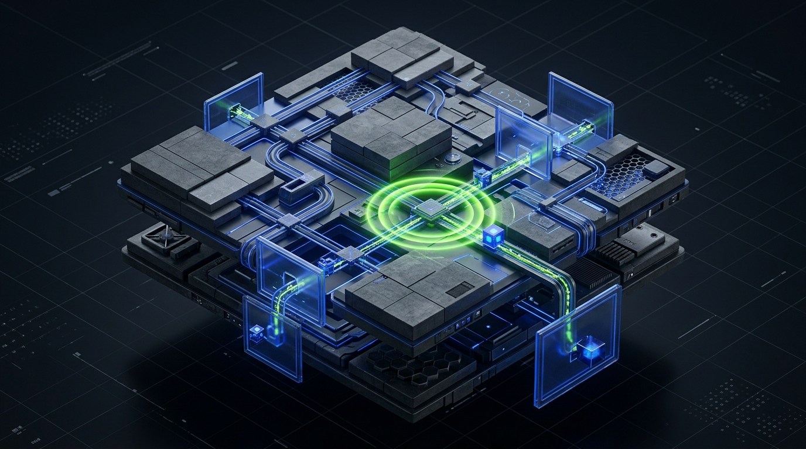

PHASE 01 // SCHEDULING
Deterministic Task DAG Scheduling
Every action is partitioned into atomic execution steps with state rollback verification.

Audited core modules and open-source infrastructure driving the Benni OS agent network.
NEMESIS Security Gateway.
Autonomous process dispatcher.
Complete catalog of public, open source, and core proprietary modules sourced directly from verified repository metadata.
Every action is partitioned into atomic execution steps with state rollback verification.
JARVAS-2 agent threads invoking native tools with real-time state synchronization.
Verified Git commits and MONOMO telemetry records proving clean completion.
Connect with enterprise operators building sovereign AI infrastructure, deploying agent swarms, and auditing production code.